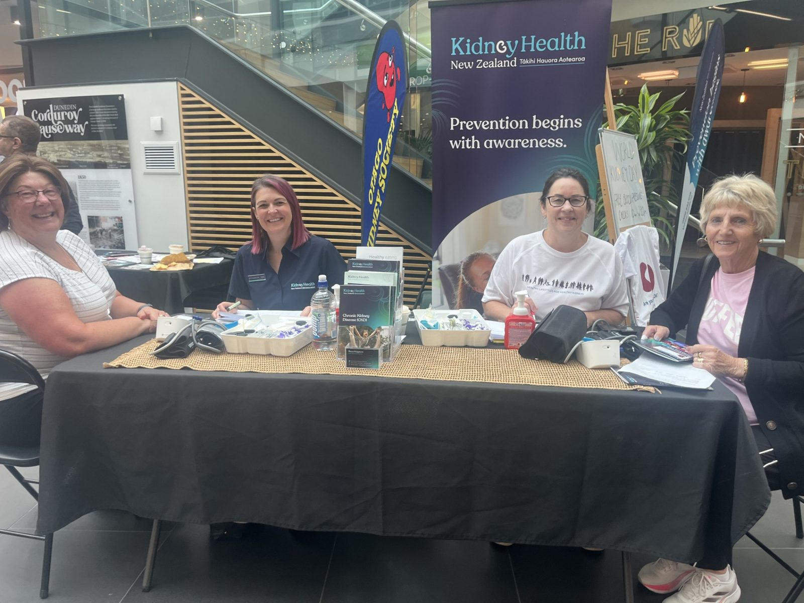
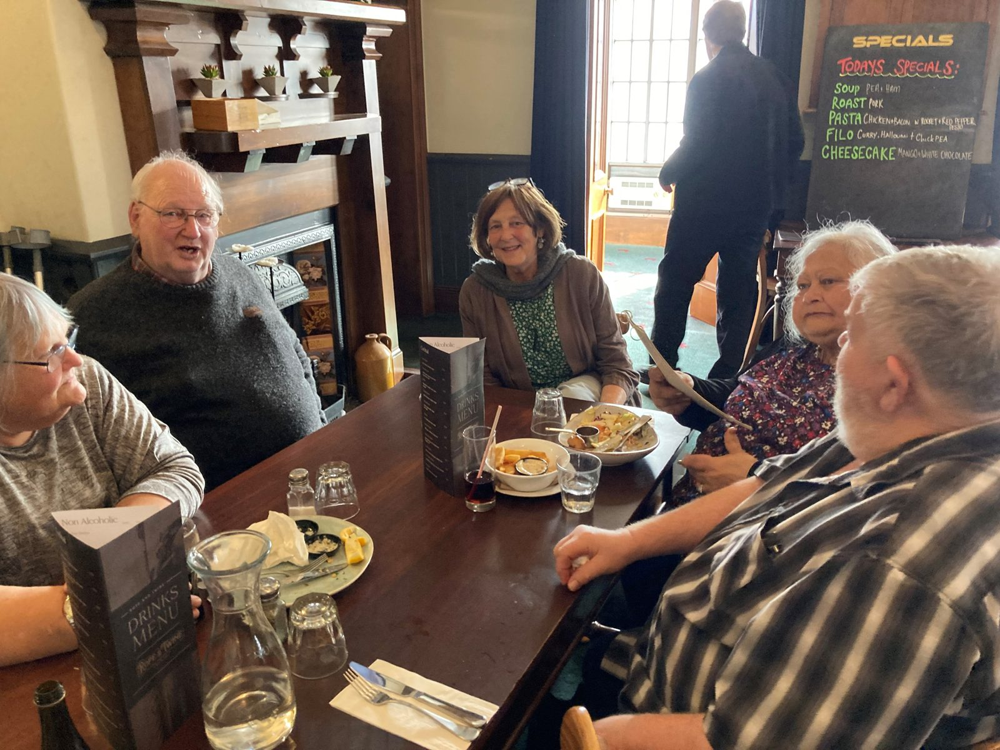

The Otago Kidney Society brings together people living with kidney disease, their whānau and supporters across Otago — for friendship, information and a little practical help along the way.

Run by volunteers, for the renal community of Otago and beyond. Everything we do is free for members.
Regular lunches through the year, in Dunedin and around Otago. A chance to meet others who understand.
News from the Dunedin Dialysis Unit, kidney societies around the country, research updates, recipes and member stories.
Friendly faces call in at the Dunedin Hospital Dialysis Unit — for a chat or just a smile.
Gift packs for new patients, petrol vouchers when travel is tough, fresh baking from our friends at Good Bitches Baking, and equipment for the Unit.
Each March we run a community stand in central Dunedin — free blood pressure checks, kidney function tests with KHNZ, and information for everyone.
With our patron Katherine Rich and partners like Kidney Health New Zealand, we champion better awareness of kidney disease and organ donation.

Many of our members say the lunches are the most important thing the Society does. They’re a relaxed chance to meet other people who understand what living with kidney disease is really like.
OKS contributes $10 towards each member’s meal. Bring a partner, a friend or a whānau member — everyone is welcome.
See upcoming eventsReach out — we’d love to hear from you. Membership is free, and we can pop you on our newsletter list, send you a welcome gift pack, or arrange for someone to chat with you at the Unit.